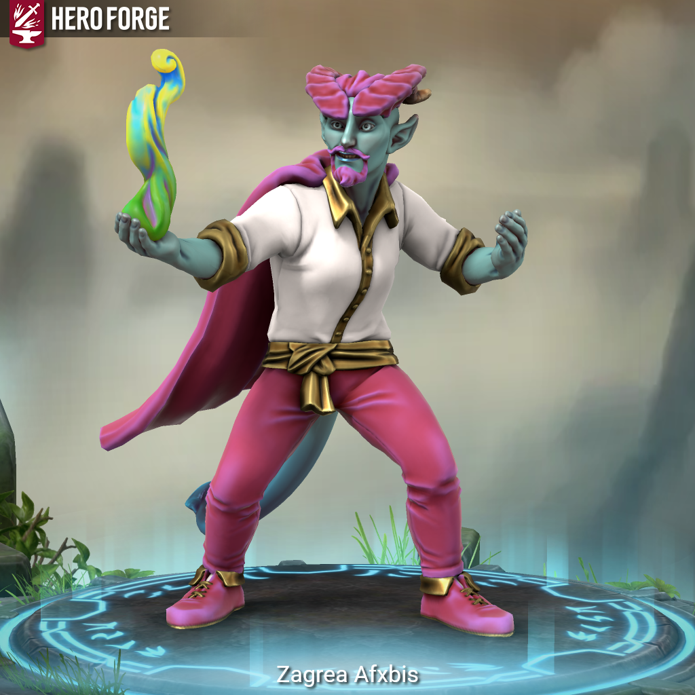

Zagrea Afxbis - Is This Anything?

Meet Zagrea Afxbis.
Six generations ago, a young Tiefling named Urxikas Afxbis was playing dice in a loud bar and caught another player cheating. He called it out. There was a scuffle. The scuffle became a brawl. The brawl became a full-room catastrophe – everyone involved, furniture flying, chaos wall to wall.
Everyone except the Green Hag sitting alone in the far corner.
Urxikas got thrown across the room and landed near her. Scrambling up, he stepped on her pack. Something inside shattered. She screamed. The whole bar went quiet.
She walked up to him slowly. Got close. And in a voice barely above a whisper, she told him exactly what she thought of him and every red-blooded, tail-dragging devilspawn that would come after him. Then she blew a handful of sand in his eyes and walked out.
That was six Afxbisses ago. The curse has been passed down faithfully through every generation. Uncontrollable magic. Skin that changes color every time a spell fires – bright green after poison, bright red after fire, eight colors counted so far, possibly more to come. The Afxbis line has learned, generation to generation, how to ride the magic, how to keep it from swallowing them whole. The skin, they never figured out.
Somehow, Zagrea is a happy guy. Charismatic, warm, a little prone to exaggeration when he’s telling stories. He finds joy in most things. Most people like him immediately.
But spend enough time with him and you’ll see it – something behind the eyes. Something that doesn’t quite rest. He keeps moving because standing still was never really an option. He wasn’t welcome most places, growing up. So he kept walking, kept adventuring, and somewhere along the way started looking for something that resembles peace.
He hasn’t found it yet. His powers are getting stronger by the day.
Zagrea Afxbis is a tall Tiefling Sorcerer with almost no muscle to speak of, wearing colorful striped overalls and a cape long enough to wrap himself in – both striped vertically in white, red, vermillion, orange, amber, yellow, chartreuse, green, teal, blue, violet, purple, magenta, and black. He attacks from range and relies on his arcane knowledge when his spells don’t cooperate. He can will his bare hands to strike like a club, dagger, or handaxe, and can summon a vibrant shield of light from his own arms when pressed. He is a lifelong adventurer, a walking folk legend, and arguably the most colorful person in the room – sometimes literally.
#iTA #isThisAnything #DnD #TTRPG #Homebrew #CharacterIntro #Sorcerer #Tiefling